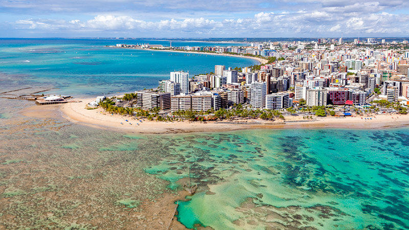

Sergipe é o menor estado do Brasil, localizado na região Nordeste, conhecido por sua rica cultura e belas praias. Sua capital é Aracaju, uma cidade acolhedora com uma orla encantadora, cheia de parques, museus e uma vida cultural vibrante. Sergipe possui praias paradisíacas, como a Praia do Saco, a Praia de Atalaia e a Praia de Aruana, que atraem turistas em busca de descanso e lazer. Além das belezas naturais, o estado tem uma história interessante, com influências indígenas, africanas e portuguesas, refletidas na sua música, dança e culinária. A gastronomia sergipana é deliciosa, destacando pratos com frutos do mar, como caranguejo, sururu e moqueca. A economia de Sergipe é baseada na indústria petroquímica, na agricultura e no turismo, fazendo do estado um lugar cheio de charme, cultura e belezas naturais.
 Voltar